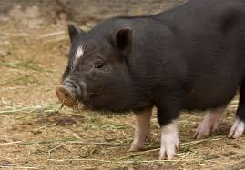
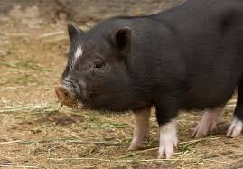

Description and behaviour
A typical pig has a large head with a long snout that is strengthened by a special prenasal bone and by a disk of cartilage at the tip.[8] The snout is used to dig into the soil to find food and is a very acute sense organ. There are four hoofed toes on each foot, with the two larger central toes bearing most of the weight, but the outer two also being used in soft ground.
Distribution and evolution
Long isolated from other pigs on the many islands of Indonesia, Malaysia, and the Philippines, pigs have evolved into many different species, including wild boar, bearded pigs, and warty pigs. Humans have introduced pigs into Australia, North and South America, and numerous islands, either accidentally as escaped domestic pigs which have gone feral, or as wild boar.
Habitat and reproduction
The wild pig (Sus scrofa) can take advantage of any forage resources. Therefore, it can live in virtually any productive habitat that can provide enough water to sustain large mammals such as pigs. If there is increased foraging of wild pigs in certain areas, it can cause a nutritional shortage which can cause the pig population to decrease. If the nutritional state returns to normal, the pig population will most likely rise due to the pigs' naturally increased reproduction rate.